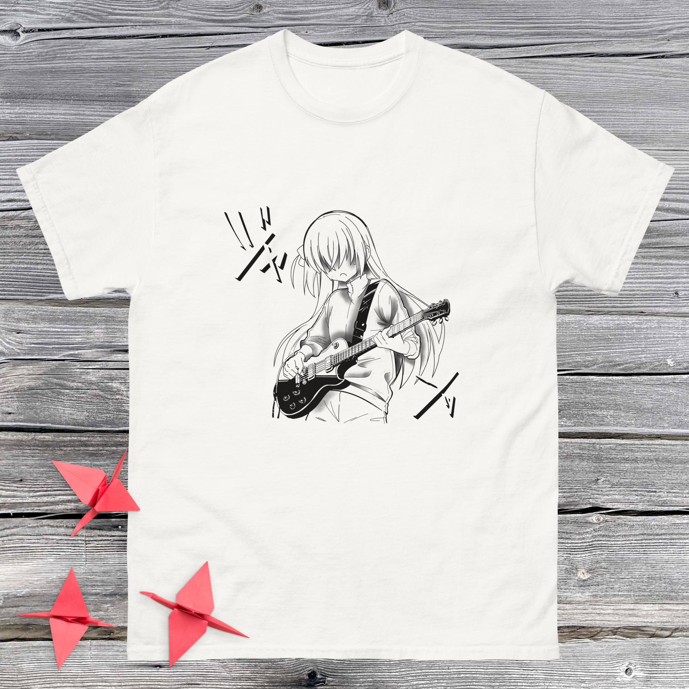
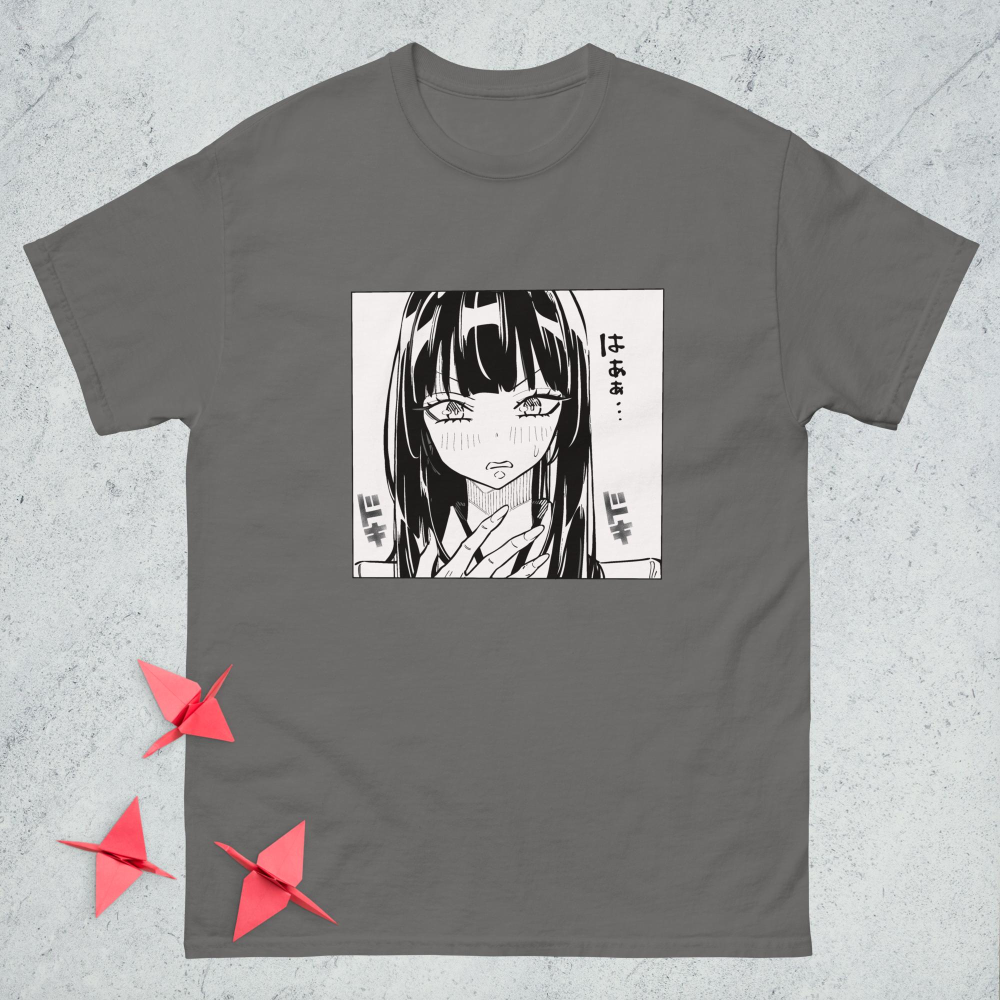
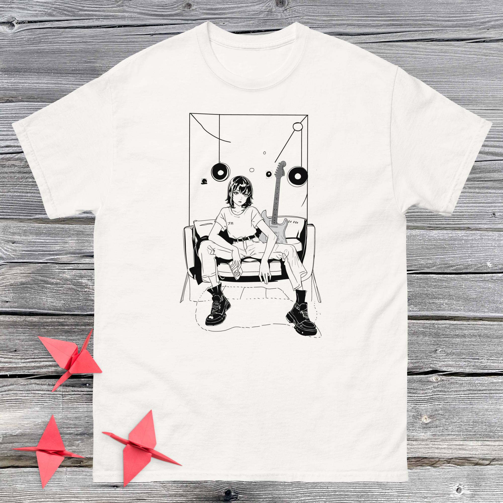
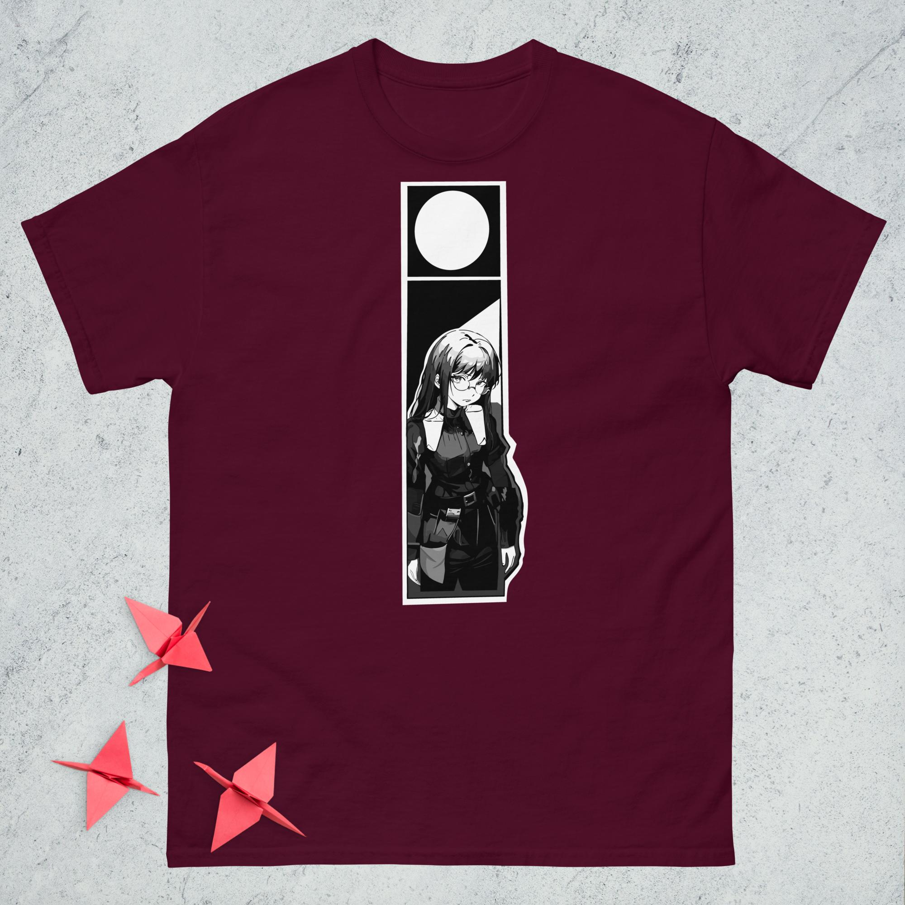
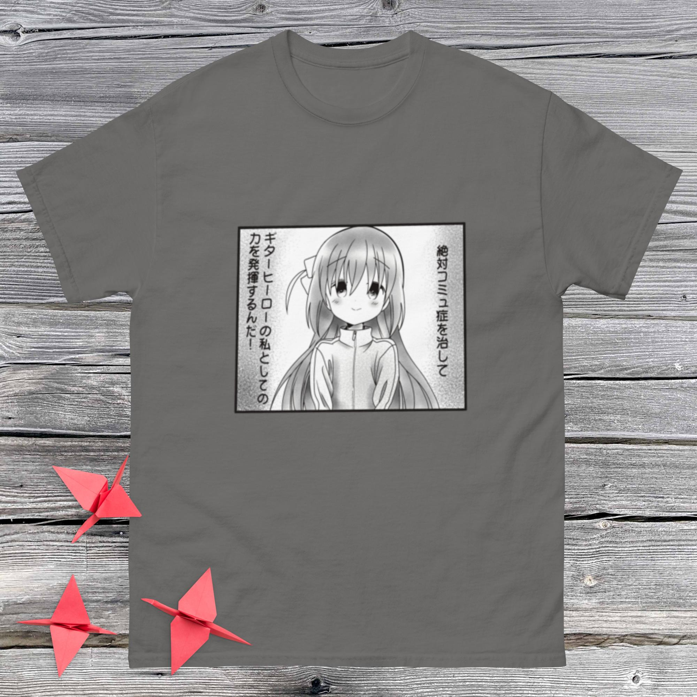

Nueva Colección






Una escena congelada en tinta, donde una chica atrapada en su propia viñeta transmite más de lo que las palabras podrían decir. Esta camiseta en blanco y negro, inspirada en el manga japonés tradicional, captura un instante de preocupación, introspección y belleza minimalista.Perfecta para quienes conectan con las emociones sutiles, los detalles del dibujo a mano y el arte que habla en silencio.